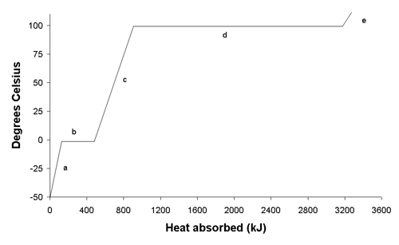

Heat
Adding heat to a substance can cause...
- an increase in the average kinetic energy of the particles (temperature)
- an increase in the potential energy associated with the intermolecular bonds
Phase Changes

When a phase change occurs (e.g. solid to liquid) the heat goes entirely into potential energy.
- The temperature remains constant while the phase change is occuring.
- At 0.00 °C, ice begins to melt as more heat is added.
- The temperature remains at 0.00 °C until the water is completely liquid.
- Only after the ice is completely melted does the temperature begin to rise again.
Latent Heat
The amount of heat needed to cause a phase change is called the latent heat.
- Latent heat of fusion refers to a solid-to-liquid phase change.
- Latent heat of vapourization refers to a liquid-to-gas phase change.
- Some substances chage directly from solid to gas; this is called sublimation.
Water
The latent heat of fusion for water is:$$H_f = \mathrm{6.01\ kJ/mol}$$
- This means that it takes 6010 joules of heat to completely melt one mole of ice.
- If the amount of ice is more or less than one mole, we need to multiply by the number of moles:$$Q = nH$$
- The latent heat of vapourization for water is different than for fusion:$$H_v = \mathrm{40.65\ kJ/mol}$$
Example 1
How much heat does it take to melt 3.00 moles of ice?
- \(n = \mathrm{3.00\ mol}\)
- \(H_f = 6.01\ \mathrm{kJ/mol}\)
$$\begin{align}Q &= nH_f\\ &= \mathrm{3.00\ mol\cdot 6.01\ kJ/mol}\\ &= \mathrm{18.0 \ kJ}\end{align}$$
Example 2
How much water can be converted to steam in one minute by a heater that produces 600 J/s?
- \(H_v = \mathrm{40.65\ kJ/mol} = \mathrm{4.065\times 10^4\ J/mol}\)
- \(Q = \mathrm{600\ J/s\cdot 60.0\ s = 3.60\times 10^4\ J}\)
$$Q = nH_v$$
$$n = {Q\over H_v} = \mathrm{3.60\times 10^4\ J\over 4.065\times 10^4\ J/mol} = \mathrm{0.886\ mol}$$
Example 3
How much heat is needed to convert 100 grams of ice at 0.00 °C to water at 37.0 °C?
We need to convert grams to moles to use the latent heat equation...
$$M = (2\times 1.01 + 16.00)\ \mathrm{g/mol}= 18.02\ \mathrm{g/mol}$$
$$n = {m \over M} = \mathrm{100\ g\over 18.02\ g/mol} = 5.55\ \mathrm{mol}$$
$$Q = nH_f = \mathrm{5.55\ mol \cdot 6.01\ kJ/mol} = \mathrm{33.4\ kJ}$$
This is the energy to melt the ice. The temperature is still 0.00 °C.
To heat the water further...
$$\begin{align}Q &= mc\Delta T\\ &= \mathrm{100\ g \cdot 4.19\ J/(g\cdot C) \cdot 37.0° C}\\ &= \mathrm{15.5\ kJ}\end{align}$$
The total heat needed is 33.4 kJ + 15.5 kJ = 48.9 kJ